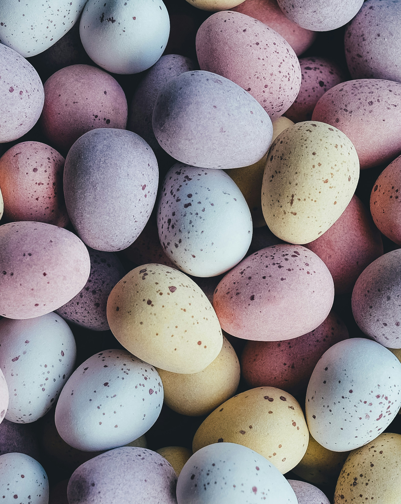
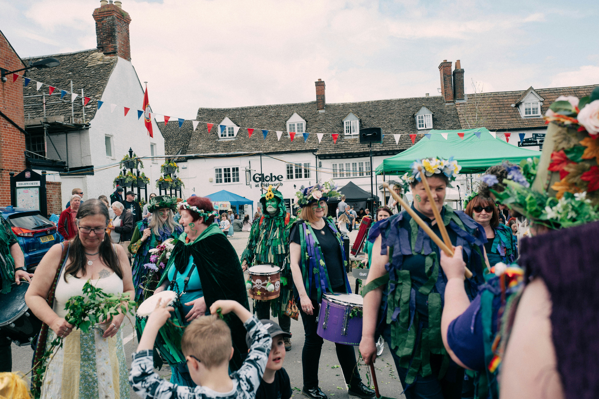

IMBOLC
Date: February 1, 2025
Imbolc is a Gaelic festival that is celebrated on February 1st (or the first full moon of February, depending on the tradition). It marks the beginning of spring, and is a time for honoring the goddess Brigid, who is associated with healing, fertility, and creativity. Celebrations may include lighting candles, making corn dollies, and honoring the goddess through song and dance.

OSTARA
Date: March 21, 2025
Ostara is a holiday that is celebrated in the Northern Hemisphere on the Spring Equinox, which is around March 21st. It is a celebration of fertility, rebirth, and new beginnings. Celebrations may include decorating eggs, gathering flowers, and feasting with friends and family.

BELTANE
Date: May 1, 2025
Beltane is a Gaelic festival that is celebrated on May 1st (or the first full moon of May, depending on the tradition). It is a celebration of fertility, love, and passion, and is a time for honoring the god Bel. Celebrations may include lighting bonfires, dancing around the Maypole, and feasting with friends and family.
